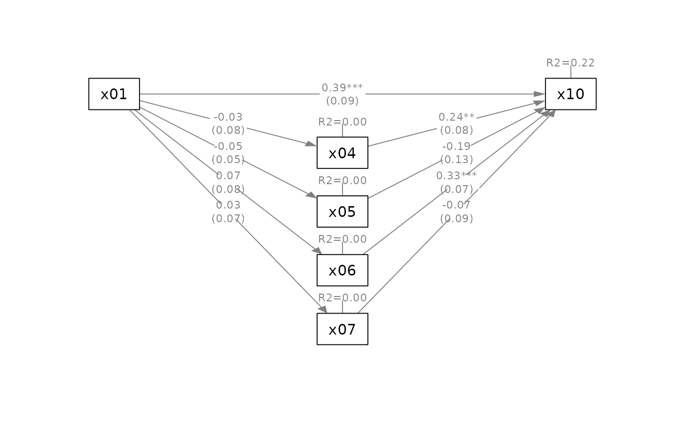
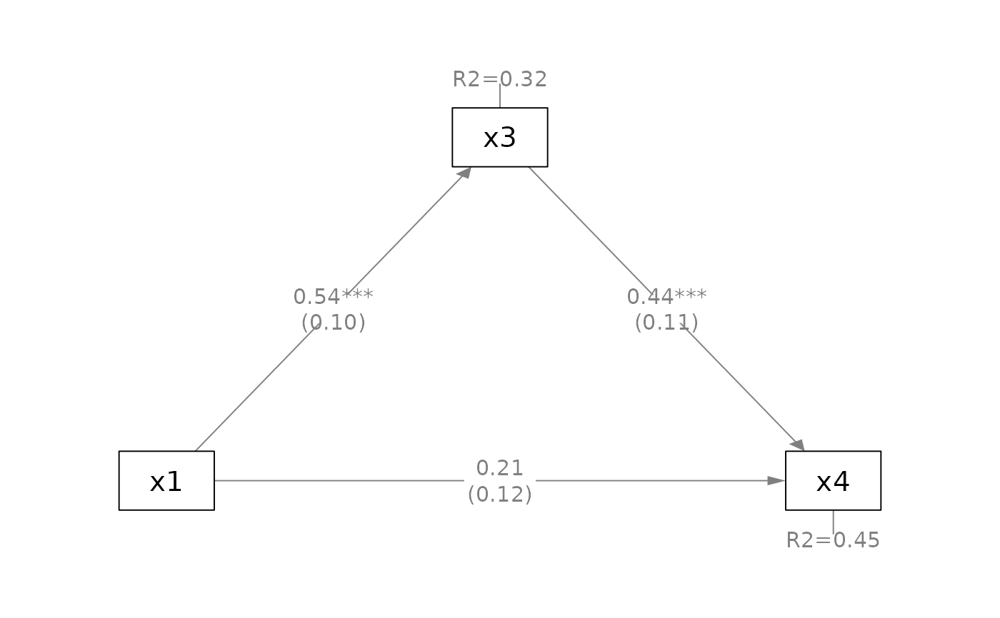

Simple-to-use functions for generating plots of common models.
Usage
quick_parallel_mediation(
object,
x,
m,
y,
mediators_position = c("center", "top", "bottom"),
what = "path",
whatLabels = "est",
style = c("lisrel", "ram"),
nCharNodes = 0,
nCharEdges = 0,
sizeMan = NULL,
sizeLat = NULL,
edge.label.cex = NULL,
intercepts = FALSE,
...,
plot_now = TRUE,
do_mark_se = TRUE,
do_mark_sig = TRUE,
do_rotate_resid = TRUE,
do_add_rsq = TRUE,
add_notes = FALSE,
notes = NULL
)
q_parallel(
object,
x,
m,
y,
mediators_position = c("center", "top", "bottom"),
what = "path",
whatLabels = "est",
style = c("lisrel", "ram"),
nCharNodes = 0,
nCharEdges = 0,
sizeMan = NULL,
sizeLat = NULL,
edge.label.cex = NULL,
intercepts = FALSE,
...,
plot_now = TRUE,
do_mark_se = TRUE,
do_mark_sig = TRUE,
do_rotate_resid = TRUE,
do_add_rsq = TRUE,
add_notes = FALSE,
notes = NULL
)
quick_serial_mediation(
object,
x,
m,
y,
mediators_position = c("top", "bottom"),
what = "path",
whatLabels = "est",
style = c("lisrel", "ram"),
nCharNodes = 0,
nCharEdges = 0,
sizeMan = NULL,
sizeLat = NULL,
edge.label.cex = NULL,
intercepts = FALSE,
...,
plot_now = TRUE,
do_mark_se = TRUE,
do_mark_sig = TRUE,
do_rotate_resid = TRUE,
do_add_rsq = TRUE,
add_notes = FALSE,
notes = NULL
)
q_serial(
object,
x,
m,
y,
mediators_position = c("top", "bottom"),
what = "path",
whatLabels = "est",
style = c("lisrel", "ram"),
nCharNodes = 0,
nCharEdges = 0,
sizeMan = NULL,
sizeLat = NULL,
edge.label.cex = NULL,
intercepts = FALSE,
...,
plot_now = TRUE,
do_mark_se = TRUE,
do_mark_sig = TRUE,
do_rotate_resid = TRUE,
do_add_rsq = TRUE,
add_notes = FALSE,
notes = NULL
)
quick_simple_mediation(
object,
x,
m,
y,
mediators_position = c("top", "bottom"),
what = "path",
whatLabels = "est",
style = c("lisrel", "ram"),
nCharNodes = 0,
nCharEdges = 0,
sizeMan = NULL,
sizeLat = NULL,
edge.label.cex = NULL,
intercepts = FALSE,
...,
plot_now = TRUE,
do_mark_se = TRUE,
do_mark_sig = TRUE,
do_rotate_resid = TRUE,
do_add_rsq = TRUE,
add_notes = FALSE,
notes = NULL
)
q_simple(
object,
x,
m,
y,
mediators_position = c("top", "bottom"),
what = "path",
whatLabels = "est",
style = c("lisrel", "ram"),
nCharNodes = 0,
nCharEdges = 0,
sizeMan = NULL,
sizeLat = NULL,
edge.label.cex = NULL,
intercepts = FALSE,
...,
plot_now = TRUE,
do_mark_se = TRUE,
do_mark_sig = TRUE,
do_rotate_resid = TRUE,
do_add_rsq = TRUE,
add_notes = FALSE,
notes = NULL
)Arguments
- object
A
lavaanobject, such as the output oflavaan::sem().- x
The name of the
xvariable. Must have exactly onexvariable.- m
The name(s) of the
mvariable(s). The allowed number ofmvariable(s) depends of the model to be drawn.- y
The name of the
yvariable. Must have exactly oneyvariable.- mediators_position
For a simple mediation model, it can be either
"top"or"bottom". For a parallel or serial mediation model, it can be"top","bottom", or"center".- what
The same argument of
semPlot::semPaths(). What the edges (arrows) denote. Default is"path", the paths drawn with equal width.- whatLabels
The same argument of
semPlot::semPaths(). What the edge labels represent. Default is"est", the parameter estimates. Can be set to"std"to print standardized coefficients.- style
The same argument of
semPlot::semPaths(). How residual variances are drawn. Can be"lisrel", the default, or"ram".- nCharNodes
The same argument of
semPlot::semPaths(). Default is 0, to disable abbreviation of the variable names.- nCharEdges
The same argument of
semPlot::semPaths(). Default is 0, to disable abbreviation of the edge labels.- sizeMan
The same argument of
semPlot::semPaths(). The size of the observed variables. Default isNULLand the actual size determined internally based on the number of mediators.- sizeLat
The same argument of
semPlot::semPaths(). The size of the latent variables. Default isNULLand the actual size determined internally based on the number of mediators.- edge.label.cex
The same argument of
semPlot::semPaths(). The size of the edge labels (parameter estimates). Default isNULLand the actual size determined internally based on the number of mediators.- intercepts
The same argument of
semPlot::semPaths(), determining whether intercepts will be plotted. Default isFALSE, different fromsemPlot::semPaths(). It should not be set toTRUE, but included as an argument for possible features to be added in the future.- ...
Other arguments to be passed to to
semPlot::semPaths().- plot_now
Logical. If
TRUE, the default, the plot will be plotted immediately. Set it toFALSEif the plot will be further processed before being plotted.- do_mark_se
Logical. If
TRUE, the default, standard errors will be added bymark_se(). Thelavaanstandard errors will be used if the standardized coefficients are requested (whatLabelsset tostd).- do_mark_sig
Logical. If
TRUE, the default, significance test results will be marked by asterisks usingmark_sig().- do_rotate_resid
Logical. If
TRUE, the default, Error variances, or R-squares ifdo_add_rsqisTRUE, will be rotated based on the layout.- do_add_rsq
Logical. If
TRUE, the default, Error variances will be replaced by R-squares, added byadd_rsq().- add_notes
Logical. If
TRUEandplot_nowis alsoTRUE, a note will be added bytext(), usingnotes. Customization is limited. Do not use for now. Commonly used notes will be added in the future.- notes
A string, the notes to be printed if
add_notesisTRUE.
Value
A qgraph::qgraph generated
by semPlot::semPaths() and
customized by other semptools
functions is returned invisibly.
Called for its side effect.
Details
A collection of functions for generating the plots of common models. They are designed to need as few arguments as possible to have a plot that should need minimal postprocessing.
Currently, functions are available for these plots:
Simple mediation models (a model with only one mediator):
q_simple()orquick_simple_mediation().Parallel mediation models (a model with one or more paths between two variables, each path with only one mediator):
q_parallel()orquick_parallel_mediation().Serial mediation models (a model with one main path between two variables, withe one or more mediators along the path):
q_serial()orquick_serial_mediation().
For these three functions, if the
default settings are desired, users
only need to supply the lavaan
output, and specify:
The
xvariable (predictor) to be included.The
mvariable(s) to be included, which is a character vector if the model has more than one mediator.The
yvariable to be included.
These variables can be observed
variables or latent factors. Indicators
of latent variables will not be drawn
(unless they are listed in x,
m, or y).
The layout is determined by the
argument mediators_position, with
two or more preset layouts for each
model.
By default, the following will be added to the plot:
Asterisks included to denote the significance test results (implemented by
mark_sig()).Standard errors included for free parameters (implemented by
mark_se()).R-squares are drawn in place of error variances for the
mvariable(s) andyvariable (implemented byadd_rsq()).
These options can be turned off if so desired.
Unlike other function in semptools,
these functions are usually used to
plot a model immediately. Therefore,
the resulting plot will be plotted by
default. Turned this off by setting
plot_now to FALSE (analogous to
setting DoNotPlot to FALSE when
calling semPlot::semPaths()).
Although the plot is designed to be
ready-to-plot, it can be further
processed by other semptools
functions if necessary, just like the
plot of semPlot::semPaths().
Variables to be drawn
For readability, it is common for researchers to omit some variables when drawing a model.
For example:
m ~ x + c1 + c2
y ~ m + x + c1 + c2
If c1 and c2 are control variables,
researchers want to draw only these\
paths
m ~ x
y ~ m + x
The quick plot functions can be used for this purpose. Only selected variables will be included in the plots.
Researchers may also want to draw
several plots, one for each pair of
the predictor (the x-variable) and
the outcome variable (the
y-variable).
For example,
m ~ x + c1 + c2
y1 ~ m + x + c1 + c2
y2 ~ m + x + c1 + c2
For this model, in addition to
excluding the control variables,
researchers may want to generate two
diagrams, one for y1:
m ~ x
y1 ~ m + x
and the other for y2:
m ~ x
y2 ~ m + x
Note that all the functions will not
check the models. The specification
of x, m, and y are assumed to
be valid for the fitted models.
Examples
library(lavaan)
library(semPlot)
# ---- Parallel Mediation Model
mod_parallel <-
'x04 ~ x01
x05 ~ x01
x06 ~ x01
x07 ~ x01
x10 ~ x04 + x05 + x06 + x07 + x01'
fit_parallel <- lavaan::sem(mod_parallel,
sem_example)
q_parallel(fit_parallel,
x = "x01",
m = c("x04", "x05", "x06", "x07"),
y = "x10")
q_parallel(fit_parallel,
x = "x01",
m = c("x04", "x05", "x06", "x07"),
y = "x10",
mediators_position = "top")
q_parallel(fit_parallel,
x = "x01",
m = c("x04", "x05", "x06", "x07"),
y = "x10",
mediators_position = "bottom")

# Suppress some elements for readability
q_parallel(fit_parallel,
x = "x01",
m = c("x04", "x05", "x06", "x07"),
y = "x10",
mediators_position = "bottom",
do_mark_se = FALSE)
# ---- Serial Mediation Model
mod_serial <-
'x04 ~ x01
x05 ~ x04 + x01
x06 ~ x04 + x05 + x01
x07 ~ x04 + x05 + x06 + x01
x08 ~ x04 + x05 + x06 + x07 + x01'
fit_serial <- lavaan::sem(mod_serial,
sem_example)
q_serial(fit_serial,
x = "x01",
m = c("x04", "x05", "x06", "x07"),
y = "x08")
q_serial(fit_serial,
x = "x01",
m = c("x04", "x05", "x06", "x07"),
y = "x08",
mediators_position = "bottom")
# Suppress some elements for readability
q_serial(fit_serial,
x = "x01",
m = c("x04", "x05", "x06", "x07"),
y = "x08",
mediators_position = "bottom",
do_mark_se = FALSE)
# ---- Simple Mediation Model: With Control Variables
mod_pa <-
'x3 ~ x1 + x2
x4 ~ x3 + x1 + x2'
fit_pa <- lavaan::sem(mod_pa,
pa_example)
mod_sem <-
'f1 =~ x01 + x02 + x03
f2 =~ x04 + x05 + x06 + x07
f3 =~ x08 + x09 + x10
f4 =~ x11 + x12 + x13 + x14
f3 ~ f1 + f2
f4 ~ f1 + f3'
fit_sem <- lavaan::sem(mod_sem,
sem_example)
q_simple(fit_pa,
x = "x1",
m = "x3",
y = "x4")

# Drawing latent factors only
q_simple(fit_sem,
x = "f1",
m = "f3",
y = "f4",
whatLabels = "std",
mediators_position = "bottom")